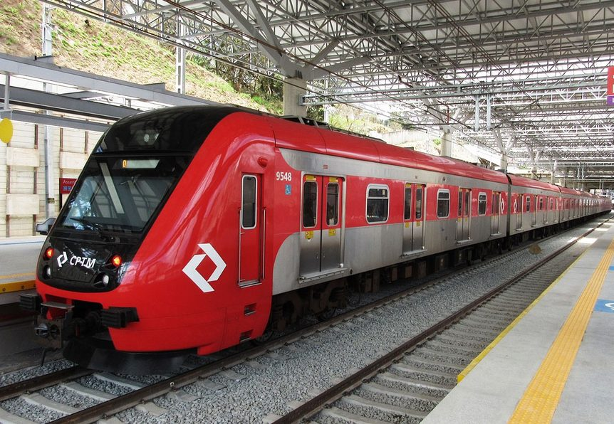
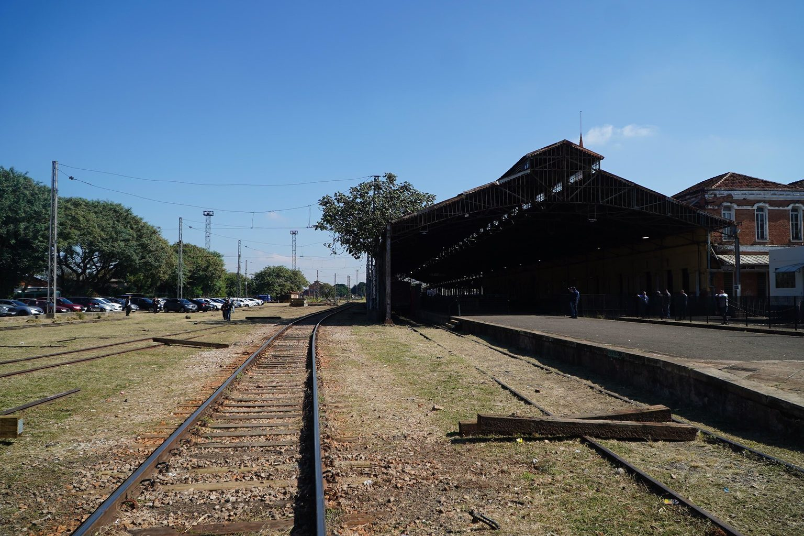
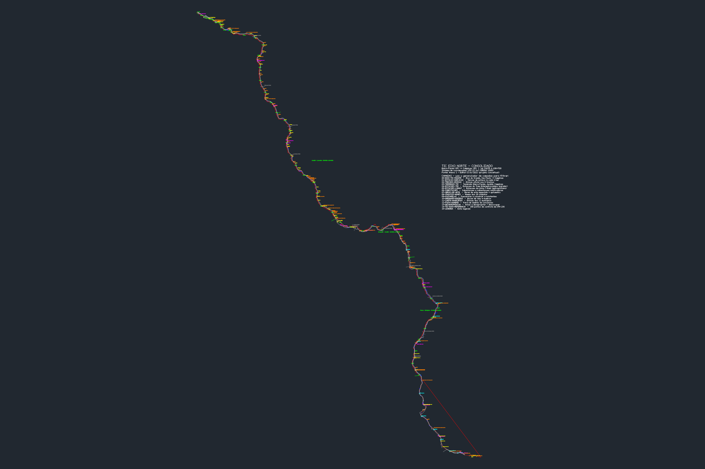

Serviço expresso (TIC)
Barra Funda até Campinas, com parada em Jundiaí. 101 km, viagem de 64 minutos e velocidade de até 140 km/h — o trem de média velocidade mais rápido em operação no país.

Concessão patrocinada · Estado de São Paulo
O Eixo Norte do Trem Intercidades conecta a capital a Campinas com parada em Jundiaí, somando o serviço expresso, o trem parador intermetropolitano e a modernização da Linha 7–Rubi.
01 — Sobre
O TIC Eixo Norte é uma Parceria Público-Privada do Estado de São Paulo para a prestação do serviço público de transporte de passageiros sobre trilhos, ligando a capital ao município de Campinas com parada em Jundiaí.
O empreendimento não se limita a um único serviço. São três linhas integradas, operadas em regime de concessão por 30 anos pelo consórcio C2 Mobilidade sobre Trilhos (TIC Trens), formado pela CRRC (fabricante, 40%) e pelo Grupo Comporte (operador, 60%).
A operação abrange 11 municípios e cerca de 15 milhões de pessoas nas regiões metropolitanas de São Paulo, Jundiaí e Campinas —tres das maiores economias regionais do país.

Barra Funda até Campinas, com parada em Jundiaí. 101 km, viagem de 64 minutos e velocidade de até 140 km/h — o trem de média velocidade mais rápido em operação no país.
Trem Intermetropolitano entre Jundiaí e Campinas, com paradas em Louveira, Vinhedo e Valinhos. 44 km, 33 minutos, 7 trens.
O serviço metropolitano da CPTM entre Barra Funda e Jundiaí, com 17 estações, entra na concessão para modernização e operação, mantendo a tarifa pública.
Toda a documentação da concessão — edital, anexos técnicos, contrato e termos aditivos — é pública, mas estava espalhada em milhares de páginas de PDF. Este site organiza esse material para que cidadãos, moradores da área afetada, pesquisadores e participantes de audiências públicas consigam entender o que está sendo concedido, a que custo e com quais prazos.
Explorar os dados estruturados02 — Cidades participantes
A faixa atravessa a capital, a região metropolitana de São Paulo, a Aglomeração Urbana de Jundiaí e a Região Metropolitana de Campinas.
Barra Funda, Água Branca, Lapa, Piqueri, Pirituba, Vila Clarice, Jaraguá e Perus.
CapitalEstação de Caieiras e subestação de distribuição.
EntornoIntervenções de acessibilidade e modernização de vias.
EntornoEstação, pátio de manutenção e subestação.
EntornoEstação e subestação de Campo Limpo.
AglomeraçãoReformulação da estação de Várzea Paulista.
AglomeraçãoPrincipal ponto de interconexão. Estação, subestação retificadora, pátio de CCO e onde o expresso e o parador se cruzam.
AglomeraçãoEstação e subestação de Louveira (8 MW).
RMSEstação e cabine de seccionamento de Vinhedo.
RMSEstação, subestação e acesso terra-via.
RMSTerminal norte. Estação de Campinas, subestação e base de manutenção.
RMS
03 — Informações técnicas
Dados extraídos diretamente das plantas do projeto e dos anexos técnicos do edital.
| Serviço | Trajeto | Extensão | Tempo | Tarifa estimada |
|---|---|---|---|---|
| TIC Expresso |
Barra Funda ▸ Jundiaí ▸ Campinas | 101 km | 64 min | R$ 50,00 (até R$ 64,00) |
| TIM Intermetropolitano |
Jundiaí ▸ Louveira ▸ Vinhedo ▸ Valinhos ▸ Campinas | 44 km | 33 min | R$ 14,05 |
| Linha 7 Metropolitano |
Barra Funda ▸ Jundiaí | ~60,5 km | 61 min | Tarifa pública |
| Trecho | Estaca inicial | Estaca final | Extensão |
|---|---|---|---|
| Barra Funda – Perus | 2+640 | 21+800 | 19,160 km |
| Perus – Botujuru | 21+800 | 44+120 | 22,320 km |
| Botujuru – Jundiaí | 44+120 | 60+800 | 16,680 km |
| Jundiaí – Louveira | 60+800 | 81+740 | 20,940 km |
| Louveira – Valinhos | 81+740 | 98+659 | 16,919 km |
| Valinhos – Campinas | 98+659 | 106+700 | 8,041 km |
Total de 104,060 km entre a estaca 2+640 e a estaca 106+700. Antes do km 2+640 fica o Trecho Central Compartilhado, entre Barra Funda e Água Branca.
De Viaduto Antártica a Viaduto Pompéia e Dep. Ulisses Guimarães.
Distribuídos entre viadutos, pontes, túneis e passagens inferiores.
Drenagem dimensionada de Ø 0,6 m a Ø 3,0 m.
Obras na Linha 7 executadas pelo Estado, cada uma com faixa de km.
Poligonais de expropriação e desocupação catalogadas.
Subestações de distribuição e retificação ao longo do eixo.
Obras de arte relevantes: túnel do TIM em km 42+600 (600 m), viadutos de transposição em km 62+100, e acesso ao pátio de carga de Jundiaí em km 55+500 a 59+400 (3.900 m).
Telecomunicações por banco de dutos de 2+235 (Estacionamento de Barra Funda) a 106+700 (Subestação de Campinas) — 104.465 m, com ramais para os pátios de Lapa, Piqueri e Várzea Paulista.
04 — Andamento
Da modelagem inicial, em 2013, até o fim da concessão, por volta de 2054.
Modelagem técnica, econômica e jurídica do Eixo Norte, iniciada pelo CGPPP.
Início da cooperação técnica com o Banco Interamericano de Desenvolvimento.
Estudo de viabilidade econômico-financeira. Audiência pública em 16/08; consulta pública até 15/10.
Decreto 67.593/2023 autoriza a licitação. Edital publicado em 31/03 e republicado em 29/09.
Leilão na B3 em 29/02. Contrato assinado em 29/05. Termo Aditivo nº 01/2024.
Termo Aditivo nº 02/2025 em 04/04. Operação assistida na Linha 7–Rubi.
Início das obras e início da concessão efetiva da Linha 7–Rubi.
Início previsto do serviço do Trem Intermetropolitano (parador).
Início previsto do serviço expresso Trem Intercidades.
Fim do prazo de concessão.
Dois termos aditivos já alteraram o contrato original. Comparar o edital, o contrato assinado e os aditivos é essencial para entender a evolução do escopo, do cronograma e do investimento — o que este repositório se propõe a tornar possível.